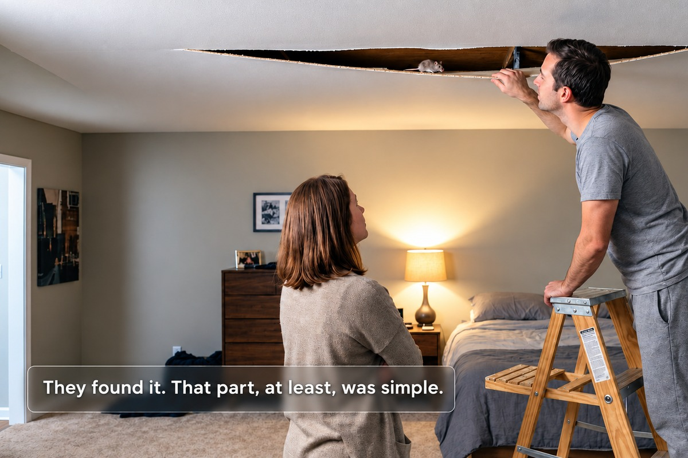
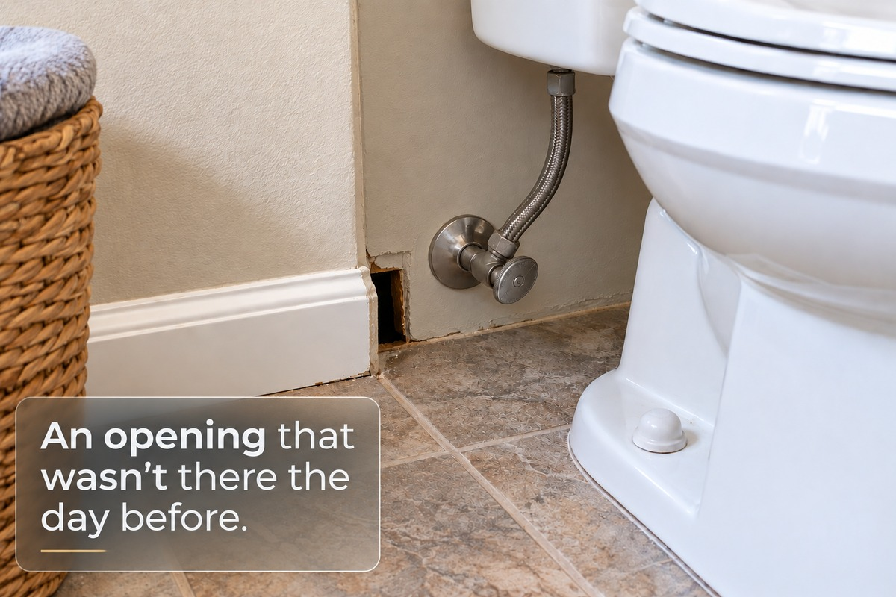
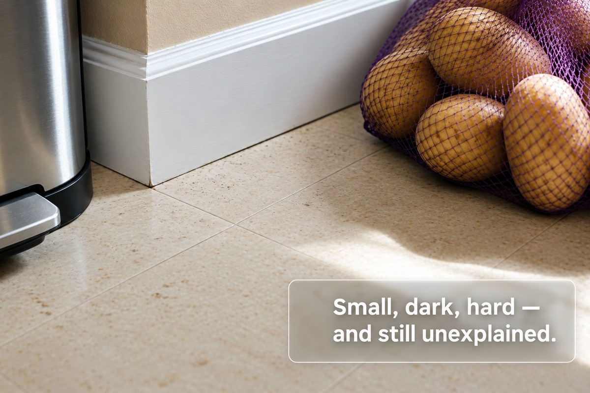
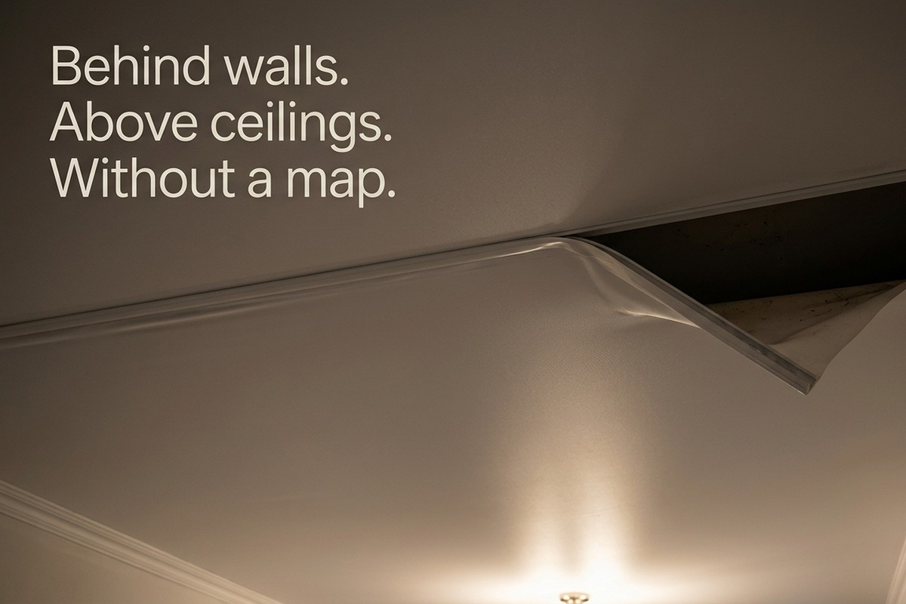
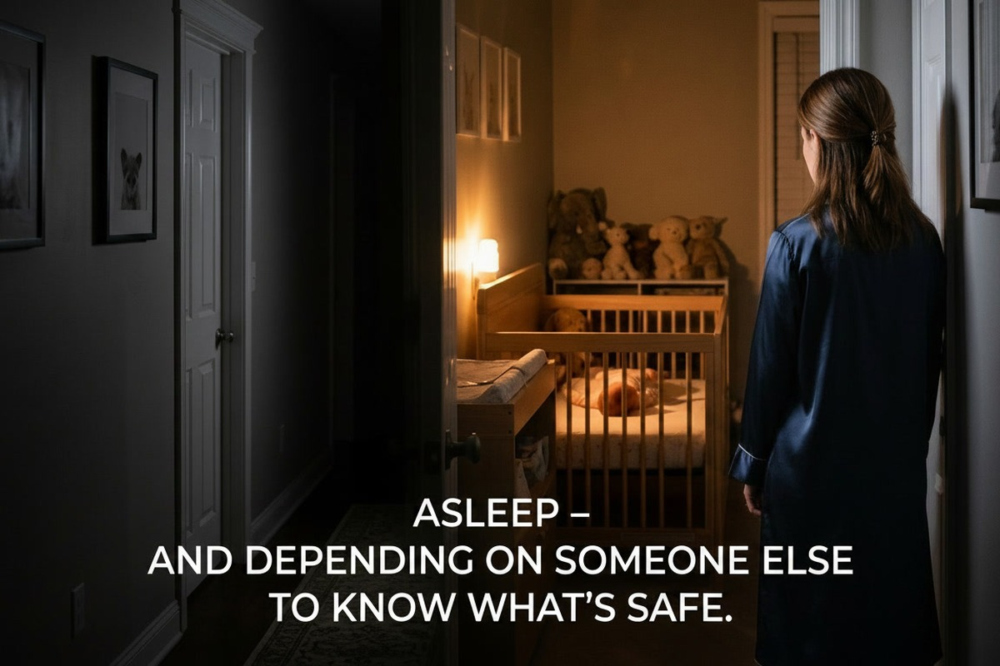
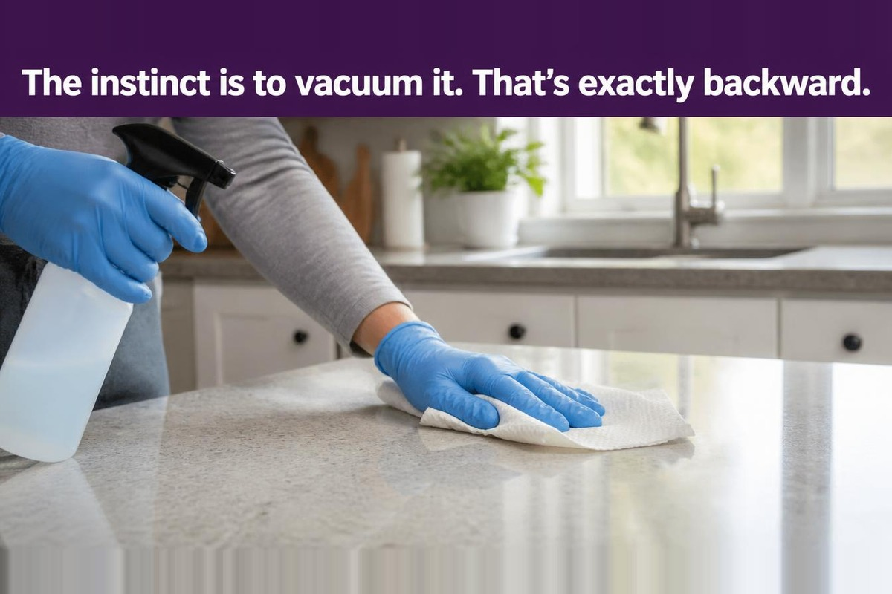

Sharon and her husband had the apartment to themselves.
Their son was at his grandmother's for the night. They'd made dinner, poured a glass of champagne, and sat together, unhurried, while the apartment did what quiet San Francisco apartments do on an ordinary evening — nothing at all.
Then, a little after midnight, something moved.
Not in the room. Above it. A shift, a scrape, something with weight to it, coming from behind the stretch ceiling over their heads.
Sharon didn't process it so much as react to it. She was on her feet and screaming before she'd consciously decided anything was wrong. Her husband — braver, or maybe just closer to the ladder — climbed up and found a gap in the ceiling material. He pulled a section back. They moved things. They looked. And eventually, in the cavity above their own bedroom, they found what had been moving.
A mouse.

They found it. The sound had a source, the source had a shape, and the shape was small and explainable. For one night, that was enough. They went to bed with a story to tell people, not a fear to carry.
The fear came the next morning, once the mouse — and the explaining — were gone.
The Morning After Is Where the Real Story Starts
Sharon's husband left for work. Her son was still at his grandmother's. She was alone in the apartment, and she was still, in her own words, shaking.
That's when she noticed the opening.
Near the toilet, there was a gap that hadn't been there the day before. She had no idea what had caused it. Nothing told her it was connected to the mouse. Nothing told her it wasn't.

And then a second memory surfaced, uninvited, the way these things do once your guard is down: two days before any of this, she'd noticed small, dark, hard objects near the kitchen trash bin. She'd assumed, at the time, that they had something to do with the potatoes stored nearby. She hadn't thought about them since.
Now she couldn't stop thinking about them.

Were they droppings? She didn't know. She still doesn't. Nobody tested them, saved them, or looked at them closely enough to say for certain. What she has is a memory of small dark objects, a mouse that turned up somewhere else entirely, and an opening near the bathroom with no confirmed explanation.
That's the whole of what's known. And it's worth sitting with how little that actually is — because the space between what happened and what it means is exactly where the fear was born, and exactly where it's going to have to be dealt with.
Why the Mouse Feels Different When There's a Baby
If Sharon and her husband had been living alone, this would already be over. A mildly funny, mildly gross story to tell at dinner. Mouse in the ceiling, mouse presumably relocated or dealt with, life continues.
But there is a baby who sleeps in that apartment. Not that night — but most nights. And that fact doesn't just add a line item to the to-do list. It changes what the entire situation means.
A pest problem asks: how do I get this animal out of my house?
A pest problem in a home with a newborn asks something else entirely: what has this animal already done to the place where my child eats, sleeps, and puts things in her mouth — and I wasn't watching?

That second question doesn't have an easy factual answer, because a mouse doesn't announce its route. It doesn't leave a map. It moves through the parts of a home a parent almost never has to think about — behind walls, above ceilings, under appliances, along the baseboards at 3 a.m. — and it does this without permission, without being seen, and without anyone knowing exactly where it's been.
What the Mind Does With Silence
The mouse was in the ceiling. Then it wasn't — or at least, no one heard it again. That is where the confirmed part of the story ends.
Where did it go. Did it stay in that cavity, or move — into a wall, along a pipe, back out through the gap it came in by. What would even count as evidence that it had traveled: a sound, a smell, a mark somewhere new. There is no way to trace an animal you can't see through the parts of a building you were never meant to look inside.

The baby is asleep down the hall. That's where the question changes shape — not where is the mouse, but what it means not to know, in the one place where someone who can't ask a question of her own, can't avoid a room, can't decide anything for herself, depends entirely on someone else's account of what's safe.
Is my baby safe here tonight?
There's no way to answer that with certainty from a stretch ceiling and a memory of dark specks near a trash bin. What there is, instead, is a way to separate what's actually known from what fear is filling in on its own — which turns out to matter more than a verdict would have.
What a Mouse's Presence Actually Proves
Once fear takes over, it tends to treat every possibility as a probability, and that produces one of two mistakes: paralysis, or overcorrection — vacuuming everything in sight, discarding things that didn't need to go, lying awake cataloguing worst cases instead of doing the handful of things that actually reduce risk.
A mouse being present in a home does not, by itself, establish that anyone in that home has been exposed to a pathogen. Rodents can carry organisms capable of making people sick, but presence and exposure are different claims, and treating them as the same one is exactly the reasoning that turns a manageable situation into an unmanageable one.
The same logic applies to the specks Sharon found near her trash bin. She can't confirm they were droppings — nobody tested them or kept them — and even if they were, a few small dropping-like objects are a reason to clean the area they were found in properly, not a reason to treat an entire kitchen, or every object a baby touches, as compromised. Evidence in one place is not the same claim as contamination everywhere.
Nor does a single sighting establish an infestation. One mouse confirms one thing: a mouse got in. What indicates something larger is a pattern over time — new droppings appearing after cleaning, repeated sightings, gnawing, nesting material — not a solitary appearance in a ceiling cavity on one night.
None of this settles, once and for all, whether it's safe to stay in a home after a sighting like this. A single mouse, seen once, does not typically call for leaving a home. Heavy contamination, an infestation that keeps producing new evidence after cleanup, or a rodent inside ventilation or heating systems are different circumstances, and they can reasonably change that calculus. What Sharon has — one mouse, found and presumably gone, and two pieces of evidence she can't yet interpret — sits closer to the first case than the second. She's the only one positioned to keep watching for whether that changes.
What the Evidence Actually Says About Health Risk
Rodents can carry organisms that make people sick, and the primary pathways are contact with droppings, urine, saliva, or nesting material — directly, through contaminated surfaces, or by breathing in particles when dry material is disturbed. That last pathway is the reason how you clean matters as much as whether you do.
Hantavirus is the disease most people reach for when they hear the word mouse, and it deserves precision rather than a vague gesture toward danger. In the United States, the hantavirus responsible for Hantavirus Pulmonary Syndrome is specifically associated with deer mice — an animal that favors rural and semi-rural terrain: open land, sheds, barns, areas near wildland. Other rodents, including house mice, are rarely if ever found carrying it, according to California's public health authorities.
Nobody identified Sharon's mouse. Its species is unknown, and nothing about living in a San Francisco apartment establishes what it was. What can honestly be said is narrower than a verdict: the disease most people picture when they imagine a mouse has a specific, limited association with one kind of rodent, not with rodents as a category. Not knowing whether Sharon's mouse belongs to that category is a genuinely different position than assuming the worst by default — and a genuinely different position than assuming the best, too.
The more common, better-understood concern with an indoor rodent isn't a rare lung disease at all — it's ordinary bacterial contamination, the same category of risk already managed with routine kitchen hygiene: droppings and urine can carry Salmonella and similar organisms capable of causing gastrointestinal illness if someone touches a contaminated surface and doesn't wash their hands, or if contaminated food is eaten.
If hantavirus infection does occur, it doesn't happen instantly. Symptoms, when they appear, typically show up one to eight weeks after a significant exposure, usually starting with fever, fatigue, and muscle aches. If anyone in the household develops those symptoms, and especially if breathing becomes difficult, in the weeks following a real rodent exposure, that's the point to contact a doctor and specifically mention the exposure. A single sighting of a mouse in a ceiling is not, on its own, that kind of exposure event.
The Cleaning Mistake
If Sharon does find droppings — hers, or anyone else's, in a similar situation — the instinct is immediate: grab the vacuum, grab a broom, make it disappear as fast as possible.
That instinct is exactly backward. Public-health guidance specifically warns against sweeping or vacuuming dry rodent droppings, urine, or nesting material, because disturbing dry material can send contaminated particles into the air — the opposite of what you want in a room your baby spends time in.

The recommended approach instead:
- Air the space out first — open windows, or let an enclosed area ventilate for roughly 30 minutes before going back in to clean.
- Put on gloves.
- Wet everything down thoroughly — droppings, nesting material, the surrounding surface — with a household disinfectant or a fresh bleach solution, before touching or moving anything.
- Let it sit a few minutes, following the product's instructions.
- Wipe it up with paper towels, dispose of the waste, and disinfect the area underneath.
- Wash hands once done and gloves are off.
If you already grabbed the vacuum before knowing any of this — which happens, and is a common way people first encounter this guidance — the instruction isn't to panic. Stop, air the room out now, and use the wet method for anything remaining. One dry pass doesn't undo the value of doing the rest correctly.
What About Her Things — the Bottles, the Blanket, the Bassinet?
You don't need to treat everything in the home as contaminated because a mouse was found somewhere in the building. The relevant question isn't was a mouse anywhere in this house — it's did this specific item have contact with an area where there's actual evidence of the mouse.
If something — a bottle, a toy, a blanket — was sitting in or right next to a spot where droppings or other clear signs were found, clean it properly for its material: hard surfaces get washed and disinfected, washable fabrics go through a normal wash. If an item was nowhere near the affected area, it doesn't need to be treated as compromised simply because a mouse existed somewhere in the same building.
This isn't a rule pulled from an official baby-safety guideline — no health agency has published item-by-item instructions specifically for infant gear and rodent contact. It's ordinary hygiene logic, applied specifically instead of generally, which is what keeps a manageable cleaning task from turning into an unnecessary purge of the nursery.
What the Signs Actually Tell You
A few small, dark, rice-like objects on their own aren't a reliable stand-alone identification; similar debris can come from other sources. What actually helps is a pattern, not a single data point. After a sighting, it's worth checking:
- Kitchen cupboards and under the sink
- Behind and beneath large appliances
- Around food storage and garbage
- Along baseboards and around pipes
- Any small gnaw marks on food packaging, boxes, or wood
That pattern answers a different question than "was there a mouse." It answers: is this one animal that got in once, or an established, ongoing route?
One Mouse, or Something More?
A single sighting establishes that a mouse got into the home — nothing more, nothing less. What actually indicates an ongoing or larger problem is a pattern over time: fresh droppings appearing after you've already cleaned, repeated sightings rather than one, gnawing on new surfaces, discovered nesting material, damaged food packaging, or sounds and signs that continue after a first pass at cleanup and sealing.
One mouse and one night of noise is evidence of an entry, not proof of an infestation. Continued evidence after addressing the obvious is what shifts the picture.
Getting Control of the House
Catching or removing the one mouse seen doesn't necessarily solve the underlying problem, because the mouse had to get in somehow — and if that route is still open, this isn't over.
- Reduce what's drawing rodents in — accessible food (including pet food left out overnight), water, and easy hiding places.
- Look for likely entry points — gaps around pipes, vents, cabinets, and other small openings. Mice fit through spaces far smaller than most people expect.
- Use snap traps, which both CDC-derived and California public-health guidance specifically recommend over glue traps or live traps — the reasoning being direct: a trapped, distressed animal is more likely to urinate or defecate, which increases the chance of exposure to contaminated material, not less.
- If a rodenticide product is used at all, it must be in an EPA-approved tamper-resistant bait station — specifically the tier rated resistant to both children under six and pets, placed exactly where the label allows and nowhere a crawling child could ever reach.
- Follow the product label exactly. It isn't a suggestion.
If you're not confident you can place a trap or bait station somewhere your baby will genuinely never reach, that's not a failure — it's a signal to bring in someone whose job this actually is.
When the Ceiling Is the Problem
Sharon's mouse wasn't on an open floor. It was inside a stretch ceiling — a space she couldn't see into, reach into, or fully inspect on her own, even after her husband pulled a section back to look.
That's a meaningfully different situation than a mouse crossing a kitchen floor in plain sight. A visible mouse in an accessible room is something a household can often address directly. A mouse moving through a ceiling cavity, wall void, or other space a resident can't safely open up is a structural question as much as a pest one — and it's reasonable, not excessive, to loop in a landlord or property manager, especially when there's an unexplained opening elsewhere in the unit that hasn't been accounted for.
There is no established connection between the mouse in Sharon's ceiling and the opening she found near her toilet the next morning. She doesn't know if they're related. Nobody does. What can be said is that an unexplained structural opening — regardless of what caused it — is worth having looked at, not guessed at.
What to Do Tonight
Not everything here is equally urgent, and not every situation calls for the same response.
If you can see droppings, urine, or nesting material: don't sweep or vacuum it. Air the room out, wet-clean it as described above, wash your hands afterward, and treat that specific area as handled — not as a reason to reexamine the whole apartment tonight.
If you've only seen one mouse, once, with no visible contamination: keep the baby away from where it was seen, check a few likely spots for a pattern, and decide whether a snap trap makes sense. A single sighting with nothing else to show for it doesn't call for an emergency response.
If the mouse is somewhere you can't reach — a ceiling cavity, a wall, a ventilation system — treating it like an open-floor sighting isn't realistic. Photograph what you find and raise it with a landlord or a pest-control professional rather than trying to solve it alone with a flashlight and a stepladder.
If new signs keep appearing after you've already cleaned — fresh droppings, gnawing, sounds that continue — that pattern is different from a single incident, and it's a reasonable point to bring in someone whose job this actually is.
If you're worried specifically about the baby, the concrete things within your control are keeping her away from any area with visible evidence, keeping feeding supplies and food away from that area, cleaning it correctly rather than quickly, and keeping any trap or rodenticide somewhere she can never reach. None of that requires identifying what the mouse was, resolving what caused the opening near the toilet, or knowing for certain what the dark specks by the trash bin were.
If anyone develops a fever, unusual muscle aches, or difficulty breathing in the weeks following a genuine rodent exposure, that's the point to call a doctor and mention the exposure specifically. A single sighting of a mouse in a ceiling, on its own, isn't that kind of exposure.
Community
Join the Conversation
Ever had something get into your home you couldn't fully account for? Share your experience below.
Sign in with GitHub to join the public discussion.
🙌 No account needed — just share your thoughts below.
Thanks — your comment has been submitted and will appear here once reviewed.
Something went wrong submitting your comment. Please try again in a moment.